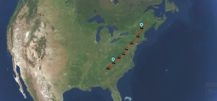
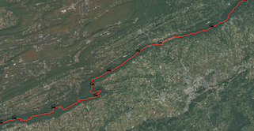
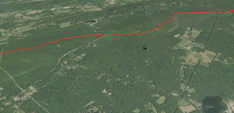

In this example, we will build upon what we have learned in the Raster Layer, Simplest Line, Terrain 3D Layer, and Clustered Markers tutorials to create something a bit more useful: a map displaying shelters and mountain peaks along the Appalachian Trail.
  
var AltusUnified = new Altus(document.getElementById("AltusDiv"));
function createAppalachianTrailExample() {
function setPosition(lat, lon, altitude) {
// create position object
var pos = new AltusUnified.GeographicPosition(lat, lon, altitude);
// create orientation object - camera pointed like standard 2D map view
var orientation = new AltusUnified.Orientation(0, 90, 0);
// create default scale object
var scale = new AltusUnified.vec3d(1, 1, 1);
// set transfrom to scene
var trans = new AltusUnified.Transform(pos, orientation, scale);
AltusUnified.scene.camera().transform.set(trans);
pos.delete();
orientation.delete();
scale.delete();
}
function pushToVector(vector, array) {
var size = array.length;
for (var i = 0; i < size; i++) {
vector.push_back(array[i]);
}
}
function deleteElements(array) {
var size = array.length;
for (var i = 0; i < size; i++) {
array[i].delete();
}
array.length = 0;
}
function addElementsToVectorAndDelete(vector, array) {
pushToVector(vector, array);
deleteElements(array);
}
function addBaseMap(mapName, url) {
var internetTileProvider = new AltusUnified.InternetTileProvider(mapName, url);
// create map description
var mapDesc = AltusUnified.VirtualMap.defaultRasterMapDesc();
var newMap = new AltusUnified.VirtualMap(mapName, mapDesc, internetTileProvider);
// add map to scene
AltusUnified.scene.addMap(newMap);
newMap.delete();
mapDesc.delete();
internetTileProvider.delete();
};
// Loads a 3D terrain layer using height data
function add3DTerrainLayer() {
var internetTileProvider = new AltusUnified.InternetTileProvider.createFromURLWithSubdomainsAndFormat(
"baseMapHeight",
"https://maps.ba3.us/terrain/nomaxheights/{z}/{x}/{y}.png",
"",
true,
AltusUnified.MapFormat.TERRAIN_HEIGHT),
// Create the terrain map object
baseDesc = AltusUnified.VirtualMap.defaultTerrainMapDesc(),
terrainMap = new AltusUnified.VirtualMap("terrain3D", baseDesc, internetTileProvider);
// Add the terrain map
AltusUnified.scene.addMap(terrainMap);
// Disable tile biasing (to minimize the amount of data loaded)
AltusUnified.scene.screen().setTileLevelBias(0);
// Clean up
terrainMap.delete();
baseDesc.delete();
internetTileProvider.delete();
}
function addSquareShelterMarkers(coordinates) {
var texture = squareTexture(16, 16, 255, 0, 0, 128),
markers = [],
vectorMarkerData = new AltusUnified.VectorMarkerData(),
markerMap,
ClusteredMarkerMapDelegate = AltusUnified.IMarkerMapDelegate.extend("IMarkerMapDelegate", {
onMarkerTapped: function(marker, screenPoint, markerPoint, mapName) {
console.log("onMarkerTapped: " + marker.metadata);
window.alert(marker.metadata + " clicked");
},
onMarkersTapped: function (markerHits) {
},
getMarkerImage: function (markerInfo, mapName) {
console.log("getMarkerImage");
},
phrase: "phrase"
}),
delegate = new ClusteredMarkerMapDelegate();
for (var i = 0; i < coordinates.length; i++) {
markers.push(new AltusUnified.MarkerData(i, coordinates[i][0], coordinates[i][1], 0, i, coordinates[i][2], texture));
}
addElementsToVectorAndDelete(vectorMarkerData, markers);
markerMap = new AltusUnified.ClusteredMarkerMap("clusteredMarkerMap2", vectorMarkerData, 32, 20, AltusUnified.TargetImageFormat.FOUR_BPP, false);
//delegate.phrase = "marker";
markerMap.setDelegate(delegate);
markerMap.setHitTestingEnabled(true);
AltusUnified.scene.addMap(markerMap);
markerMap.setOrder(500);
vectorMarkerData.delete();
markerMap.delete();
texture.delete();
delegate.delete();
}
// Returns a square texture with the given dimensions and colors
function squareTexture(width, height, red, green, blue, alpha) {
var image = squareImage(width, height, red, green, blue, alpha),
texture = new AltusUnified.Texture(image, false);
image.delete();
return texture;
}
// Creates a square image with the given dimensions and colors
function squareImage(width, height, red, green, blue, alpha) {
var vector = new AltusUnified.VectorByte(),
image;
for (var i = 0; i < width * height; i++) {
vector.push_back(red);
vector.push_back(green);
vector.push_back(blue);
vector.push_back(alpha);
}
image = new AltusUnified.Image(width, height, vector);
vector.delete();
return image;
}
function createTextureFromImageData(imageData, width, height, mipEnabled) {
var vector = new AltusUnified.VectorByte(),
image,
texture;
pushToVector(vector, imageData, width * height * 4);
image = new AltusUnified.Image(width, height, vector);
image.multiplyAlpha();
texture = new AltusUnified.Texture(image, mipEnabled);
vector.delete();
image.delete();
return texture;
}
// Returns a canvas that can be used for drawing
// Used by the addMarkerLabel function
function createCanvas(width, height) {
var canvas = document.createElement('canvas');
canvas.width = width;
canvas.height = height;
return canvas;
}
function getImageData(image) {
var canvas = createCanvas(image.width, image.height),
context = canvas.getContext("2d"),
imageData,
imageBytes;
// Copy the image contents to the canvas
context.clearRect(0, 0, image.width, image.height);
context.drawImage(image, 0, 0);
imageData = context.getImageData(0, 0, image.width, image.height);
imageBytes = new Uint8Array(imageData.data);
return imageBytes;
}
function addLines(coordinates) {
var vectorMap = new AltusUnified.DynamicVectorMap("vecMap"),
dynamicLine3DPoints = [],
dynamicLine3D = new AltusUnified.DynamicLine3D("line3D1"),
colors = [ new AltusUnified.Color(255, 0, 0), new AltusUnified.Color(0, 0, 0) ],
lineStyle = new AltusUnified.LineStyle(colors[0], 2, colors[1], 0);
for (var i = 0; i < coordinates.length; i++) {
dynamicLine3DPoints.push(new AltusUnified.GeographicPosition(coordinates[i][0], coordinates[i][1], coordinates[i][2]));
}
pushToVector(dynamicLine3D.points(), dynamicLine3DPoints);
deleteElements(dynamicLine3DPoints);
vectorMap.addDynamicLine3D(dynamicLine3D, lineStyle);
vectorMap.setTesselationThreshold(200000);
// Add map to scene
AltusUnified.scene.addMap(vectorMap);
vectorMap.setOrder(200);
vectorMap.setVectorWindingOrder(AltusUnified.VectorWindingOrder.BOTH);
}
function addPeakMarkers(image) {
if (image == null) return;
var planeImageData = getImageData(image),
texture = createTextureFromImageData(planeImageData, image.width, image.height, true),
anchor = new AltusUnified.vec2d(image.width / 2, image.height), //anchor to bottom center
markers = [
new AltusUnified.MarkerData(0, 35.562872, -83.498496, 2025, 1, "Clingman's Dome", texture),
new AltusUnified.MarkerData(1, 35.705, -83.2575, 2018, 2, "Mount Guyot", texture),
new AltusUnified.MarkerData(2, 35.71472, -83.25528, 1940, 3, "Old Black", texture),
new AltusUnified.MarkerData(3, 44.270489, -71.303246, 1917, 4, "Mount Washington", texture),
new AltusUnified.MarkerData(4, 36.104556, -82.122444, 1916, 5, "Roan High Knob", texture)
];
for (var i = 0; i < markers.length; i++) {
markers[i].anchorPoint_set(anchor);
}
var vectorMarkerData = new AltusUnified.VectorMarkerData();
addElementsToVectorAndDelete(vectorMarkerData, markers);
var markerMap = new AltusUnified.ClusteredMarkerMap("clusteredMarkerMap", vectorMarkerData, 32, 20, AltusUnified.TargetImageFormat.FOUR_BPP, false);
AltusUnified.scene.addMap(markerMap);
markerMap.setOrder(312);
vectorMarkerData.delete();
markerMap.delete();
texture.delete();
}
function addIconShelterMarkers(image, coordinates) {
var planeImageData = getImageData(image),
texture = createTextureFromImageData(planeImageData, image.width, image.height, true),
markers = [],
vectorMarkerData = new AltusUnified.VectorMarkerData(),
anchor = new AltusUnified.vec2d(image.width / 2, image.height), //anchor to bottom center
marker,
markerMap;
for (var i = 0; i < coordinates.length; i++) {
marker = new AltusUnified.MarkerData(i, coordinates[i][0], coordinates[i][1], 0, 1, coordinates[i][2], texture);
marker.anchorPoint_set(anchor);
markers.push(marker);
}
addElementsToVectorAndDelete(vectorMarkerData, markers);
markerMap = new AltusUnified.ClusteredMarkerMap("clusteredMarkerMap2", vectorMarkerData, 32, 20, AltusUnified.TargetImageFormat.FOUR_BPP, false);
AltusUnified.scene.addMap(markerMap);
markerMap.setOrder(500);
vectorMarkerData.delete();
markerMap.delete();
texture.delete();
}
return {
addBaseMap: addBaseMap,
add3DTerrainLayer: add3DTerrainLayer,
addIconShelterMarkers: addIconShelterMarkers,
addSquareShelterMarkers: addSquareShelterMarkers,
addLines: addLines,
addPeakMarkers: addPeakMarkers,
setPosition: setPosition
}
}
// Called by the mapping engine after it has initialized
function onAltusEngineReady() {
var AppalachianTrailExample = createAppalachianTrailExample(),
mapName = "MapBox Aerial",
tileProviderUrl = "https://a.tiles.mapbox.com/v4/dxjacob.ho6k3ag9/{z}/{x}/{y}.jpg?access_token=pk.eyJ1IjoiZHhqYWNvYiIsImEiOiJwYXotMmtVIn0.rvNzd7EZTKqynbx-9BQdtA",
image = new Image(),
shelterIconImage = new Image();
AppalachianTrailExample.addBaseMap(mapName, tileProviderUrl);
AppalachianTrailExample.add3DTerrainLayer();
shelterIconImage.src = "";
AppalachianTrailExample.addIconShelterMarkers(shelterIconImage, AppalachianTrailData.shelterCoordinates);
AppalachianTrailExample.addLines(AppalachianTrailData.centerLineCoordinates);
//image.src = "BlueDotMarker.png";
image.src = "";
AppalachianTrailExample.addPeakMarkers(image);
//Position of camera
AppalachianTrailExample.setPosition(39.720774, -85.505561, 6000000);
AltusUnified.scene.atmospherics().setSunLocationType(AltusUnified.LocationType.DIRECTION_VIEW_OFFSET); //no dark side
AltusUnified.scene.atmospherics().setLightingType(AltusUnified.LightingType.REALISTIC); //blue sky
console.log("Version Hash - " + AltusUnified.Scene.versionHash());
console.log("Version Tag - " + AltusUnified.Scene.versionTag());
};
AltusMappingEngine Web v2.0.ut.2153.g60764257e master
COPYRIGHT (C) 2017, BA3, LLC ALL RIGHTS RESERVED